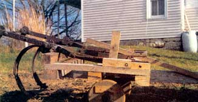
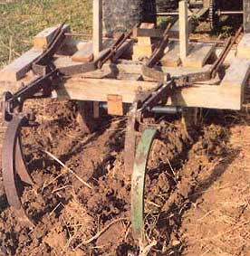
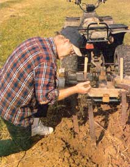

Through some strange quirk of physics, every year the rows in my garden seem to get a little longer, the weeds' roots get a little deeper and my hoe's handle gets a little harder. Some would say this is from advancing age, but that obviously isn't possible, since I'm as young as I was 15 years ago.
Besides these strange developments, I also find the demand in my area for my good, fresh, organic produce grows every year. Expanding my gardens seemed the wise choice, but it was going to require more power than just one man could produce. I needed a cultivator, but a store-bought one for use in a small field or garden was out of my price range (more than $1,000).
So I raided my ever-useful scrap wood pile and made a cultivator to pull behind my trusty all terrain vehicle (ATV). I think by reading my story you could do it, too. I don't have a formula to follow: The beauty of my system is it uses what's available.
I made the tongue from a 6-foot-long, red oak 4x4. Since the width of my ATV is 42 inches, I made the cultivator 46 inches wide to wipe out tire tracks as I went. I made room for diggers in the length, making the cultivator 42 inches long. You can decide your own needs and design accordingly.
On the port and starboard sides, screw two 2x4s. (You should now have a thing that looks like a horse-drawn drag without teeth.) Drill appropriate holes for the draw pin to fit in on the draw bar of your tractor or ATV. Get a couple of pieces of flat iron about 12 inches long, 1/4 inch thick and 1 1/2 inches wide. Attach these two pieces of iron to the top and bottom of the tongue.
I used some scraps of 2x12 pine, just wide enough to make circular cutouts for wheels that were 11 inches in diameter. Cut them out with a jigsaw and mark the center while you are there. I found an old piece of well pipe, about 1 1/4x24 inches long, which made a great axle. Use a hole saw and electric hand drill to make the holes in the center of the wheels for the axle to run through. Use cotter pins through the axle on both sides and washers on either side of each wheel to keep the wheels from running off when you turn corners.
I scavenged my digging tines from an old field cultivator ("quack digger"). I put the tines on the machine, took a piece of pretty sturdy 1/2-inch steel rod, ran it through the hole mounts and secured them on both sides of the machine.
The lifting of the tines could be done with an expensive electromechanical device, but I found a simple piece of 4x4 red oak, spanning the width of the cultivator, does the same thing. The closer you put the wood to the axle of the tines, the higher the tines will raise for transporting requirements.
As trial and effort showed, it takes three or four trips over hard, overgrown ground to make the soil workable enough to plant.
Early spring is the best time to put this cultivator to work, before first growth starts.
That's it. Of course, these are the materials I had access to. You can substitute materials lying around your yard. As an Iowan, I deal mostly in facts, and the fact of the matter is that you don't have to spend a lot to mechanize your operation, too.
Fully detailed plans, parts list and instructions are available by sending $10 to:
AN Field Cultivator Plan P.O. Box 101 Wadena, IA 52169 email: garyv@mwci.net
|
 From crap to super garden implement, Gary Voshell put this cultivator together from materials he had on hand. |
 Tines from a field cultivator give Voshell's creation its digging edge. |
 This do-it-yourself cultivator works great in tandem with an all terrain vehicle. |